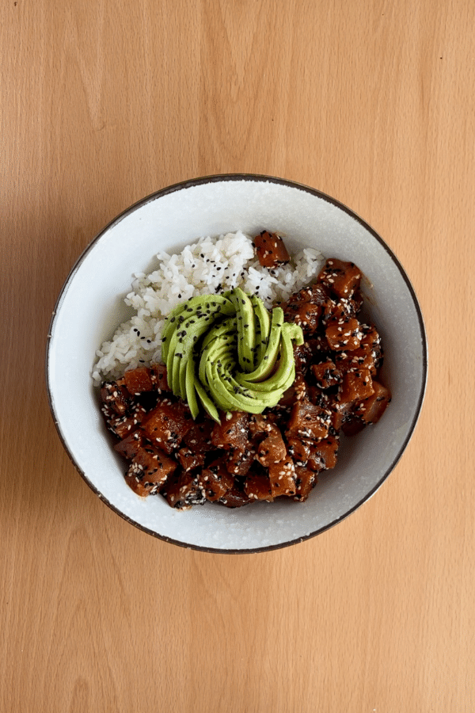
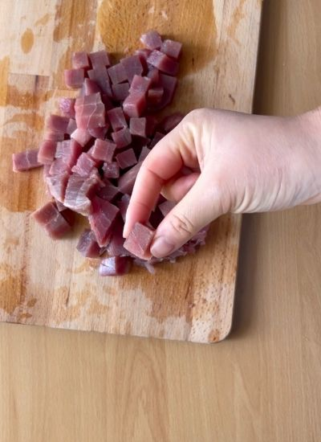
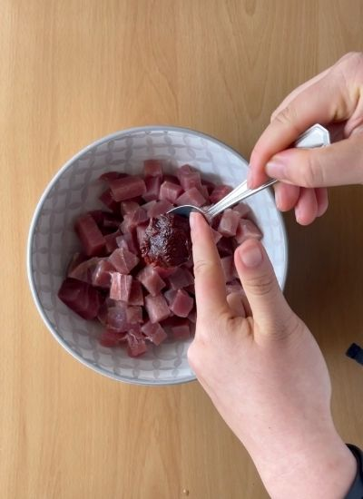
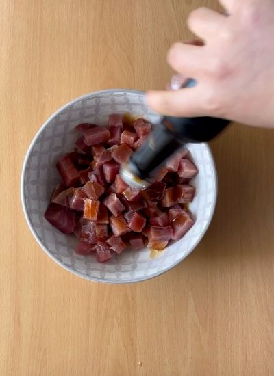
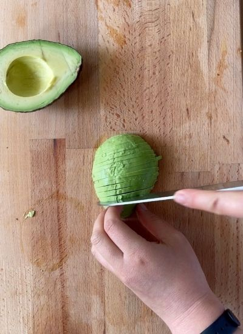
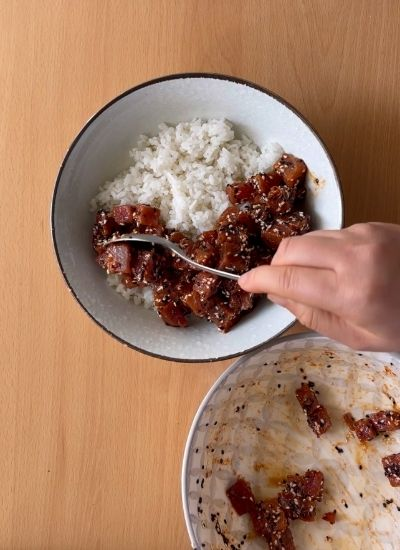

Por probar · Hawaiana
← Recetas
Poke Bowl de Atún y Aguacate

Preparación
- Corta el atún en dados de 1 cm.

- Mézclalo con el Gochujang, la soja, el sésamo, el aceite de sésamo y la sal.

- Tapa y refrigera 30 minutos para que marine.

- Mientras, cuece el arroz y lamina el aguacate (plano o en flor). Deja templar el arroz a temperatura ambiente para que no cueza el atún.

- Monta el bol: arroz de base, el atún marinado a un lado y el aguacate en el centro. Espolvorea sésamo y sirve con nori.
